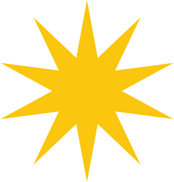

Conheça a
Justiça Eleitoral


Conheça e faça o download de cada um dos aplicativos da Justiça Eleitoral no Google Play ou Apple Store.
O Tribunal Superior Eleitoral, com sede na capital da República e jurisdição em todo o país;
Um tribunal regional na capital de cada estado, no Distrito Federal e, mediante proposta do Tribunal Superior, na capital de território;
As juntas eleitorais;
Os juízes eleitorais.
É possível acompanhar os processos que tramitam na Justiça Eleitoral pelo portal do TSE.
O Portal do TSE dispõe de todas as informações referentes aos principais serviços. Na seção Serviços ao Eleitor , o interessado pode facilmente emitir as Certidões de Quitação Eleitoral, Crimes Eleitorais, Negativa de Alistamento, Composição Partidária e Filiação Partidária. Para isso, basta informar os dados solicitados na página. Também é possível requerer a justificativa pelo não comparecimento às urnas por meiodo Sistema de Requerimento de Justificativa.
O site possibilita, ainda, consultas ao local de votação e à situação eleitoral, além da validação de documentos emitidos virtualmente, como o e- Título. Na opção Todos os serviços, estão disponíveis os endereços dos cartórios e das zonas eleitorais, para os casos em que o comparecimento a um posto da Justiça Eleitoral seja necessário, como, por exemplo, coleta da biometria, alistamento eleitoral, emissão de segunda via do título de eleitor ou regularização da situação cadastral.
Todos os serviços são gratuitos.Apenas em casos de regularização cadastral em virtude do não comparecimento às urnas é que o eleitor ficará sujeito a uma multa mínima de R$ 3,51.
Conheça os serviços disponibilizados ao cidadão pela Justiça Eleitoral.
A urna eletrônica pode ser utilizada por entidades públicas e instituições de ensino a título de empréstimo, para utilização em eleições parametrizadas, assegurando-lhes o apoio e o suporte necessários à realização do pleito, com vista a difundir os serviços desenvolvidos pela Justiça Eleitoral e garantir a livre manifestação da comunidade, conforme prevê a Resolução-TSE – nº 22.685/2007.
A Justiça Eleitoral é um ramo especializado do Poder Judiciário e tem atuação em três esferas:
Administrativa: organiza e realiza eleições, referendos e plebiscitos, além de ser responsável por todo o cadastro eleitoral, tanto dos eleitores como dos partidos políticos e candidatos;
Regulamentar: regula e normatiza o processo eleitoral;
Jurisdicional: julga questões eleitorais.
Os horários de funcionamento dos cartórios e postos de atendimento variam de um estado para o outro. É importante acessar a página do Tribunal Regional Eleitoral do seu estado para verificar.
Sim. Segue o passo a passo:
a) Comparecer a um cartório eleitoral, apresentar um documento de identificação com foto;
b) Um comprovante de residência e preencher o Requerimento de Alistamento Eleitoral(RAE).
c) Pagar multa no valor de R$ 3,51 por turno faltante.Cada turno é considerado uma eleição.
d) Aguardar o reinício das atualizações de cadastro do banco de dados da Justiça Eleitoral.Só a partir dessa data é que a situação estará regularizada.
Seu título foi cancelado? Saiba o que fazer a partir de agora.

At vero eos et accusamus et iusto odio dignissimos ducimus qui blanditiis praesentium voluptatum deleniti atque corrupti quos dolores et quas molestias excepturi sint occaecati cupiditate non provident, similique sunt in culpa qui officia deserunt mollitia animi, id est laborum et dolorum fuga.
Em 2022, comemoram-se os 90 anos do voto feminino no Brasil. As mulheres lutaram pelo direito de votar por muito tempo. Embora esse direito fosse legítimo, elas tiveram de persistir e contar com o apoio de diversos setores da sociedade, como intelectuais, clérigos e políticos, para conseguirem escolher seus(suas) representantes.
Nesse contexto, ganhou força o movimento feminista, tendo à frente a professora Maria Lacerda de Moura e a bióloga Bertha Lutz, que fundaram a Liga para a Emancipação Internacional da Mulher – um grupo de estudos cuja finalidade era a luta pela igualdade política das mulheres.
Antes mesmo de 1932, documentos históricos apontam que a professora Celina Guimarães foi a primeira eleitora brasileira, com repercussão internacional. Celina requereu sua inclusão no rol de eleitores do município de Mossoró (RN), onde nasceu, em 1927, após a entrada em vigor da Lei Estadual nº 660, de 25 de outubro daquele ano, que tornava o Rio Grande do Norte o primeiro estado a estabelecer a não distinção de sexo para o exercício do voto.
3 DE NOVEMBRO: Data em que o governo provisório de Getulio Vargas enviou ao Congresso Nacional o projeto de lei que asseguraria, dois anos depois, o direito das mulheres ao voto – motivo pelo qual foi escolhida como o Dia da Instituição do Direito de Voto da Mulher no Brasil.
24 DE FEVEREIRO: A promulgação do Código Eleitoral de 1932 mudou a história da democracia no Brasil. Dentre as diversas inovações trazidas pelo Código, destacam-se a criação da Justiça Eleitoral, o estabelecimento do voto obrigatório e secreto, a instituição do voto feminino e a adoção do sistema de representação proporcional.
20 DE MAIO: Quase três meses após a criação da Justiça Eleitoral, em fevereiro, o Tribunal Superior Eleitoral (à época denominado Tribunal Superior de Justiça Eleitoral) foi instalado no edifício do Supremo Tribunal Federal, localizado na Avenida Rio Branco, no Rio de Janeiro/RJ. A Secretaria do Tribunal iniciou seu funcionamento em uma das salas do terceiro andar do prédio, com apenas 17 funcionários.
3 DE MAIO: Ocorreram as primeiras eleições organizadas pela Justiça Eleitoral, nas quais mais de 1 milhão e 200 mil pessoas escolheram 214 parlamentares constituintes, o que culminou na promulgação da Constituição de 1934.
16 DE JULHO: A primeira constituição brasileira a garantir o direito das mulheres ao voto foi a de 1934. O voto feminino no Brasil fora instituído pelo Código Eleitoral de 1932, mas foi a Assembleia Constituinte de 1933 que assegurou esse direito na Carta Magna do país.
14 DE OUTUBRO: A Justiça Eleitoral realizou, pela primeira vez, as eleições para a Câmara dos Deputados e para as Assembleias Legislativas Estaduais. Em todo o país, dez mulheres elegem-se deputadas estaduais.
11 DE FEVEREIRO:O Tribunal Superior Eleitoral, então chamado de Tribunal Superior da Justiça Eleitoral, foi transferido da antiga sede do Supremo Tribunal Federal para o prédio onde funcionava o Tribunal Regional Eleitoral do Distrito Federal, na rua Dom Manoel, no centro do Rio de Janeiro, atualmente ocupado pelo Museu Naval. O edifício, projetado pelo engenheiro naval Francisco Correia Câmara e construído em 1898 para servir de sede ao Clube Naval, apresenta estilo eclético.
4 DE MAIO: Publicação da Lei nº 48, que modificou o Código Eleitoral de 1932. A Lei não chegou a ser aplicada, pois ocorreu o golpe do Estado Novo em 1937.
10 DE NOVEMBRO: Getulio Vargas instituiu o Estado Novo, ou a Terceira República Brasileira, em pronunciamento em rede nacional de rádio, e outorgou uma nova Constituição, que extinguiu a Justiça Eleitoral no Brasil após apenas cinco anos da sua criação, ocorrida em 1932.
2 DE DEZEMBRO: Getulio Vargas extinguiu, por meio do Decreto nº 37, todos os partidos políticos.
28 DE MAIO: A Justiça Eleitoral foi recriada pelo Decreto-Lei nº 7.586, após o fim do Estado Novo. No mesmo ano, organizou a eleição presidencial que elegeu Eurico Gaspar Dutra como Presidente da República.
1º DE JUNHO: Após o restabelecimento da Justiça Eleitoral, o Tribunal Superior Eleitoral foi instalado no Palácio Monroe, no Rio de Janeiro/RJ. Projetado e construído para ser o pavilhão do Brasil na Exposição Internacional de Saint Louis, nos Estados Unidos da América, em 1904, o Palácio Monroe recebeu o grande prêmio de arquitetura do evento.
30 DE JUNHO: Após a reinstalação da Justiça Eleitoral, foi editada a primeira instrução sobre partidos políticos, que passaram a ter caráter nacional a partir de então.
2 DE DEZEMBRO: Ocorreram as primeiras eleições organizadas pela Justiça Eleitoral após sua recriação, quase dez anos depois da instituição do Estado Novo. Nesse pleito, houve eleição para presidente da República e para parlamentares, o que culminaria na Constituição de 1946.
28 DE MAIO: A Justiça Eleitoral foi recriada pelo Decreto-Lei nº 7.586, após o fim do Estado Novo. No mesmo ano, organizou a eleição presidencial que elegeu Eurico Gaspar Dutra como Presidente da República.
1º DE JUNHO: Após o restabelecimento da Justiça Eleitoral, o Tribunal Superior Eleitoral foi instalado no Palácio Monroe, no Rio de Janeiro/RJ. Projetado e construído para ser o pavilhão do Brasil na Exposição Internacional de Saint Louis, nos Estados Unidos da América, em 1904, o Palácio Monroe recebeu o grande prêmio de arquitetura do evento.
30 DE JUNHO: Após a reinstalação da Justiça Eleitoral, foi editada a primeira instrução sobre partidos políticos, que passaram a ter caráter nacional a partir de então.
2 DE DEZEMBRO: Ocorreram as primeiras eleições organizadas pela Justiça Eleitoral após sua recriação, quase dez anos depois da instituição do Estado Novo. Nesse pleito, houve eleição para presidente da República e para parlamentares, o que culminaria na Constituição de 1946.
19 DE JANEIRO: A população escolheu governadoras, governadores, prefeitas e prefeitos em uma eleição direta pela primeira vez.
24 DE JULHO: Foi promulgada a Lei nº 1.164, estabelecendo novo Código Eleitoral, o quarto na história do Brasil.
31 DE AGOSTO: O TSE publicou a Resolução nº 4.357, que instituiu o 7º modelo de título eleitoral.
29 DE SETEMBRO: É publicado o Regimento Interno do Tribunal Superior Eleitoral – norma em vigor até os dias de hoje.
3 DE NOVEMBRO: Data em que o governo provisório de Getulio Vargas enviou ao Congresso Nacional o projeto de lei que asseguraria, dois anos depois, o direito das mulheres ao voto – motivo pelo qual foi escolhida como o Dia da Instituição do Direito de Voto da Mulher no Brasil.
Para celebrar os 90 anos da Justiça Eleitoral desde a sua primeira instituição, em 24 de fevereiro de 1932, mesma data em que se comemorarão os 90 anos do voto feminino no Brasil, o Tribunal Superior Eleitoral instituiu um grupo de trabalho (GT) multidisciplinar para organizar as ações e eventos relacionados ao tema no transcorrer de 2022. Criado em 12 de agosto pela Portaria-TSE nº 521/2021, e alterado pela Portaria-TSE nº 552/2022, esse GT possui atualmente a seguinte composição: